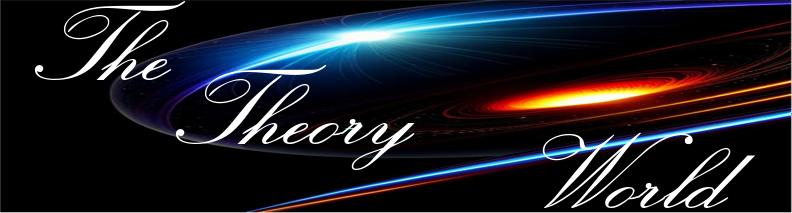

Welcome to our theory world were we are dedicate ourself to theory, where knowledge and understanding come alive. your passion for theory is evident in the diverse range of resources we offer, from foundational concepts to advanced theories.
team of experts is committed to providing you with the most up-to-date and accurate information, making us a trusted source for all your theory needs. Whether you're a student, researcher, or simply curious about the
world around you, we invite you to explore our site and discover the beauty and power of theory. Join us as we delve into the depths of knowledge and uncover new insights and perspectives. Thank you for choosing us as your
go-to destination for theory!
In everyday use, the word "theory" often means an untested hunch, or a guess without supporting evidence. But for scientists, a theory has nearly the opposite meaning. A theory is a well-substantiated explanation of an aspect of the natural world that can incorporate laws, hypotheses and facts. The theory of gravitation, for instance, explains why apples fall from trees and astronauts float in space. Similarly, the theory of evolution explains why so many plants and animals—some very similar and some very different—exist on Earth now and in the past, as revealed by the fossil record. A theory not only explains known facts; it also allows scientists to make predictions of what they should observe if a theory is true. Scientific theories are testable. New evidence should be compatible with a theory. If it isn't, the theory is refined or rejected. The longer the central elements of a theory hold—the more observations it predicts, the more tests it passes, the more facts it explains—the stronger the theory.Many advances in science—the development of genetics after Darwin's death, for example—have greatly enhanced evolutionary thinking. Yet even with these new advances, the theory of evolution still persists today, much as Darwin first described it, and is universally accepted by scientists.
A theory not only explains known facts; it also allows scientists to make predictions of what they should observe if a theory is true. Scientific theories are testable. New evidence should be compatible with a theory. If it isn't, the theory is refined or rejected.
Theories are vital: They guide and give meaning to what we see. When a researcher investigates and collects information through observation, the investigator needs a clear idea of what information is important to collect. Thus, valid theories are validated by research and are a sound basis for practical action.